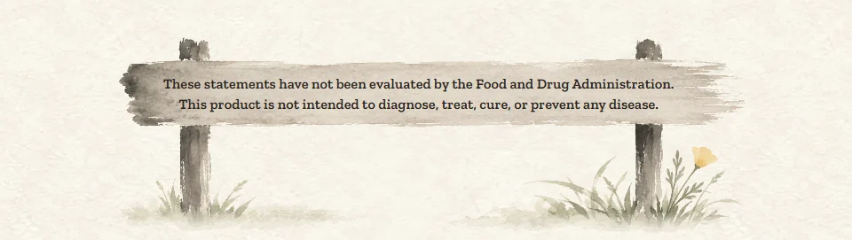
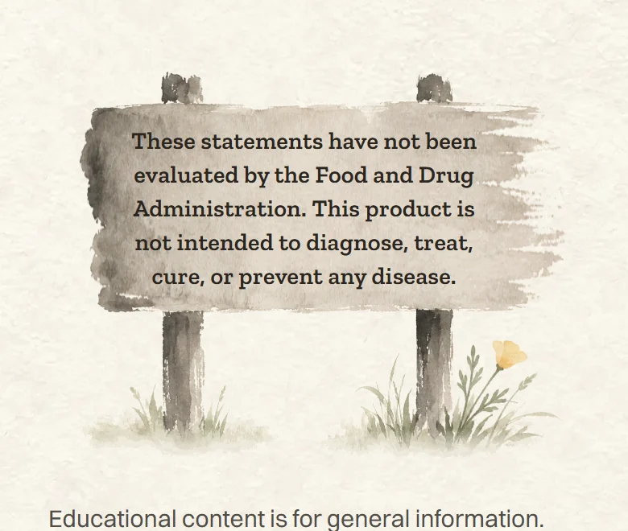
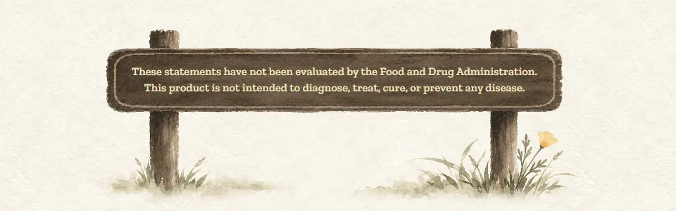
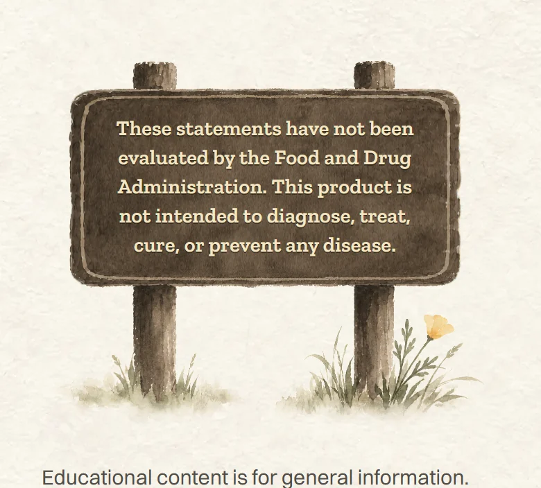
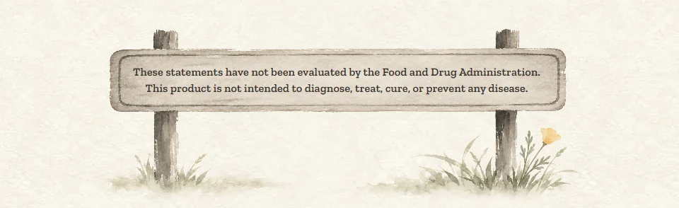
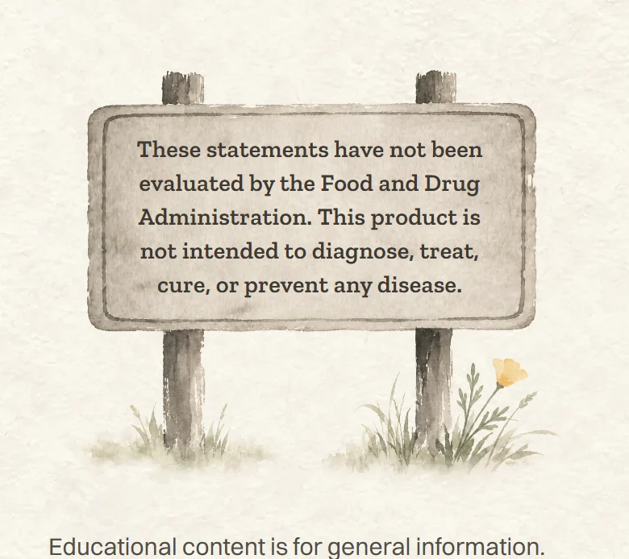

<title>Park Sign Choices</title>
<meta name="claude:viewport-fit-sides" content="cover">
<link rel="preconnect" href="https://fonts.googleapis.com">
<link rel="preconnect" href="https://fonts.gstatic.com" crossorigin>
<link rel="stylesheet" href="https://fonts.googleapis.com/css2?family=Ysabeau:wght@500;600&family=Figtree:wght@400;500;600&display=swap">
<style>
  /* Layout: one column of paper "plates", each a choice: the computer view wide, the phone view beside it (stacked on phones).
     Single look on purpose: rice paper and sumi ink, the site's own world, so the screenshots sit on the paper they were made for. */
  :root {
    --paper: #f5f1e6;
    --plate: #fbf8ef;
    --ink: #1f1d1a;
    --ink-soft: #5b564d;
    --rule: #ddd5c3;
    --gold: #a8812f;
    --display: "Ysabeau", "Iowan Old Style", Georgia, serif;
    --body: "Figtree", "Segoe UI", system-ui, sans-serif;
    color-scheme: light;
  }
  body {
    background: var(--paper);
    color: var(--ink);
    font-family: var(--body);
    font-size: 17px;
    line-height: 1.5;
  }
  .wrap {
    max-width: 1080px;
    margin: 0 auto;
    padding-block: 40px 64px;
    padding-left: max(16px, env(safe-area-inset-left, 0px));
    padding-right: max(16px, env(safe-area-inset-right, 0px));
    display: grid;
    gap: 28px;
  }
  header { display: grid; gap: 8px; max-width: 62ch; }
  h1 {
    font-family: var(--display);
    font-weight: 600;
    font-size: clamp(34px, 6vw, 48px);
    line-height: 1.05;
    margin: 0;
    text-wrap: balance;
  }
  header p { margin: 0; color: var(--ink-soft); }
  .plate {
    background: var(--plate);
    border: 1px solid var(--rule);
    border-radius: 6px;
    padding: 20px;
    display: grid;
    gap: 14px;
  }
  .plate.pick { border-color: var(--gold); box-shadow: 0 0 0 1px var(--gold); }
  .head { display: flex; flex-wrap: wrap; align-items: baseline; gap: 6px 14px; }
  .letter { font-family: var(--display); font-weight: 600; font-size: 36px; line-height: 1; }
  .name { font-family: var(--display); font-weight: 600; font-size: 26px; line-height: 1.15; margin: 0; }
  .score { font-weight: 600; font-variant-numeric: tabular-nums; color: var(--ink-soft); margin-left: auto; }
  .tag { font-size: 13px; font-weight: 600; letter-spacing: 0.06em; text-transform: uppercase; color: var(--gold); }
  .what { margin: 0; max-width: 62ch; }
  .back { margin: 0; color: var(--ink-soft); font-size: 15px; max-width: 62ch; }
  .views { display: grid; grid-template-columns: minmax(0, 2.4fr) minmax(0, 1fr); gap: 14px; align-items: start; }
  figure { margin: 0; display: grid; gap: 6px; min-width: 0; }
  figure img { display: block; width: 100%; height: auto; border-radius: 4px; border: 1px solid var(--rule); }
  figcaption { font-size: 13px; color: var(--ink-soft); }
  .now .name { font-size: 22px; }
  footer { color: var(--ink-soft); font-size: 15px; max-width: 62ch; display: grid; gap: 6px; }
  footer p { margin: 0; }
  @media (max-width: 720px) {
    .views { grid-template-columns: minmax(0, 1fr); }
    .views figure.phone { max-width: 320px; }
    .plate { padding: 16px; }
  }
</style>

<main class="wrap">
  <header>
    <h1>Sign C, park style</h1>
    <p>Sign C with the marks of a California park sign added: a carved border, rounded plank corners, and redwood brown with cream letters. Shown on the Green Bee Propolis page, on a computer and a phone.</p>
  </header>

  <section class="plate now" aria-labelledby="c1-name">
    <div class="head">
      <h2 class="name" id="c1-name">Now: sign C</h2>
      <span class="score">for comparison</span>
    </div>
    <p class="back">One grey brushstroke and a poppy. Soft, but it doesn't say "park".</p>
    <div class="views">
      <figure><figcaption>Computer</figcaption></figure>
      <figure class="phone"><figcaption>Phone</figcaption></figure>
    </div>
  </section>

  <section class="plate pick" aria-labelledby="c5-name">
    <div class="head">
      <span class="letter" aria-hidden="true">1</span>
      <h2 class="name" id="c5-name">Redwood park sign</h2>
      <span class="tag">Recommended</span>
      <span class="score">8.5 / 10</span>
    </div>
    <p class="what">A brown redwood plank with rounded corners, a cream carved border and cream letters. It reads as a park sign at a glance, and it's still painted softly.</p>
    <p class="back">Holds it back: it is the darkest thing at the bottom of the page. The brown is muted ink, not the orange of the first sign.</p>
    <div class="views">
      <figure><figcaption>Computer</figcaption></figure>
      <figure class="phone"><figcaption>Phone</figcaption></figure>
    </div>
  </section>

  <section class="plate" aria-labelledby="c3-name">
    <div class="head">
      <span class="letter" aria-hidden="true">2</span>
      <h2 class="name" id="c3-name">Grey park sign</h2>
      <span class="score">8 / 10</span>
    </div>
    <p class="what">The same park plank and carved border, kept in sign C's calm grey, with dark letters.</p>
    <p class="back">Holds it back: without the brown it says "park" more quietly, and the carved line is a bit thin.</p>
    <div class="views">
      <figure><figcaption>Computer</figcaption></figure>
      <figure class="phone"><figcaption>Phone</figcaption></figure>
    </div>
  </section>

  <footer>
    <p>Also tried and left out: the brushstroke painted brown (it looked like a smear, not a sign) and granite rocks at the posts (they read as grey blobs).</p>
    <p>These are mockups on the real Propolis page. The site itself still shows sign C. The letters stay real text and pass the contrast check.</p>
  </footer>
</main>
